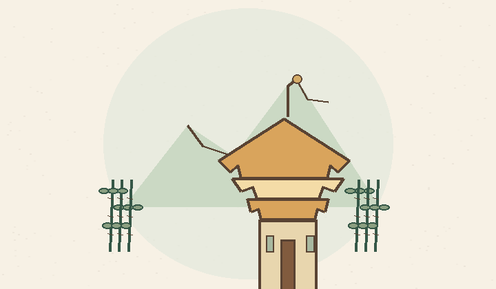
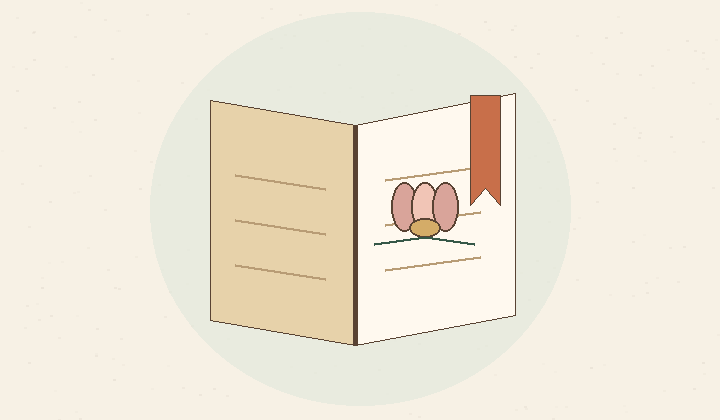
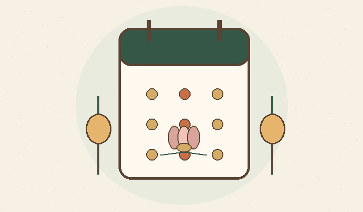

Tìm về mái chùa Việt
01Tra cứu chùa, xem ảnh, tìm địa điểm gần bạn và mở chỉ đường cho chuyến ghé thăm tiếp theo.
ĐI CHÙA · VĂN HÓA VIỆT
Một người bạn nhỏ trên hành trình tìm về những mái chùa Việt. Đọc kinh, khám phá và lưu lại những duyên lành qua từng lần ghé thăm.
Dành cho những bước chân muốn chậm lại.
NHỮNG ĐIỀU NHỎ, Ý NGHĨA LỚN
Không chỉ là nơi tra cứu. Đây là một khoảng lặng để tìm hiểu, thực hành và kết nối với văn hóa Phật giáo Việt.

Tra cứu chùa, xem ảnh, tìm địa điểm gần bạn và mở chỉ đường cho chuyến ghé thăm tiếp theo.

Đọc kinh, tìm hiểu chư vị và suy ngẫm Phật ngôn. Điều chỉnh cỡ chữ, tự động cuộn và sử dụng âm thanh mõ, chuông khi đọc.

Theo dõi lịch âm, các ngày lễ Phật giáo và lịch cá nhân. Lưu lại những dự định dành cho bản thân.
MỘT CHẠM, MỘT DUYÊN LÀNH
Chạm thẻ NFC tại chùa bằng điện thoại có hỗ trợ NFC. Ứng dụng giúp bạn ghi nhận lượt viếng, nhận tem kỷ niệm và xem lại hành trình đã đi.
Bắt đầu hành trìnhTạo tài khoản hoặc dùng tài khoản Google để lưu hành trình.
Dùng chức năng Check-in trong app và đưa thẻ sát mặt lưng điện thoại Android.
Xem tem và lịch sử sau khi máy chủ xác nhận check-in thành công.
BẮT ĐẦU TỪ MỘT BƯỚC NHỎ
Tải ứng dụng về điện thoại và dành cho mình một khoảng an nhiên.
Nhận bản APK được lưu trong kho GitHub của dự án, không cần tài khoản GitHub.
Tải APK cho Android Xem hướng dẫn cài đặtBản iPhone hiện được cài thử qua Sideloadly. Hãy liên hệ nhóm để nhận tệp IPA và hướng dẫn phù hợp.
Liên hệ nhóm qua ZaloCÀI ĐẶT THẬT DỄ DÀNG
Hướng dẫn dành cho bản APK trên Android.
Nhấn nút tải ở trên. Khi tải xong, mở tệp trong thông báo hoặc thư mục Tải xuống.
Nếu Android hỏi, mở Cài đặt và cho phép trình duyệt hoặc ứng dụng Tệp cài ứng dụng từ nguồn này.
Hoàn tất cài đặt, mở app và đăng nhập để lưu tem cùng lịch sử hành hương của bạn.
BẠN CÓ THỂ MUỐN BIẾT
Bạn vẫn có thể tra cứu chùa, đọc kinh và xem lịch khi không có NFC. Chức năng check-in bằng thẻ cần điện thoại Android hỗ trợ NFC và đã bật NFC.
Có. Tài khoản giúp lưu tem và lịch sử của riêng bạn trên máy chủ. Bạn cũng cần có kết nối mạng để máy chủ xác nhận check-in.
Ứng dụng được tải bằng tệp APK bên ngoài cửa hàng. Android sẽ yêu cầu cho phép ứng dụng đang mở tệp thực hiện cài đặt. Sau khi cài xong, bạn có thể tắt lại quyền này trong Cài đặt.
Hãy gửi ảnh lỗi và thông tin thiết bị cho nhóm trong cộng đồng Zalo để được hỗ trợ. Không gửi mật khẩu hoặc mã xác thực vào nhóm.
CÙNG NHAU ĐI XA HƠN
Chia sẻ trải nghiệm, góp ý và cùng xây dựng một cộng đồng an nhiên.